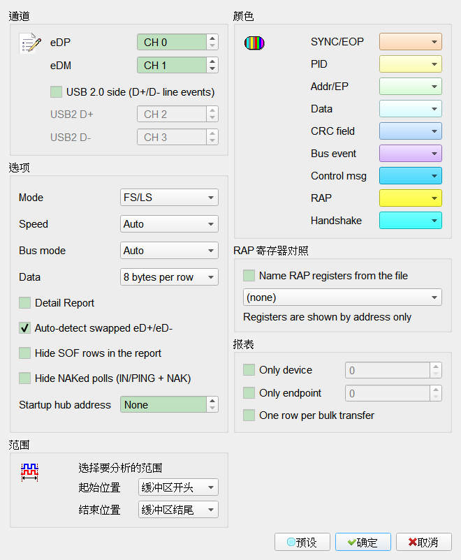
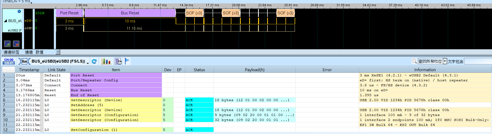
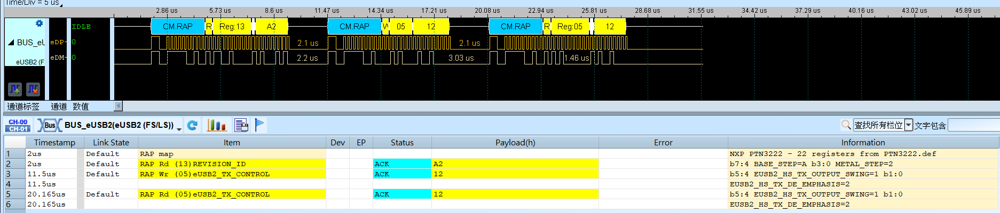
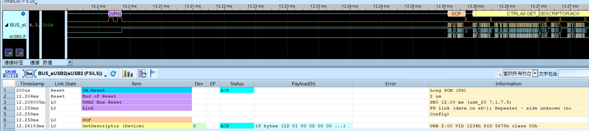
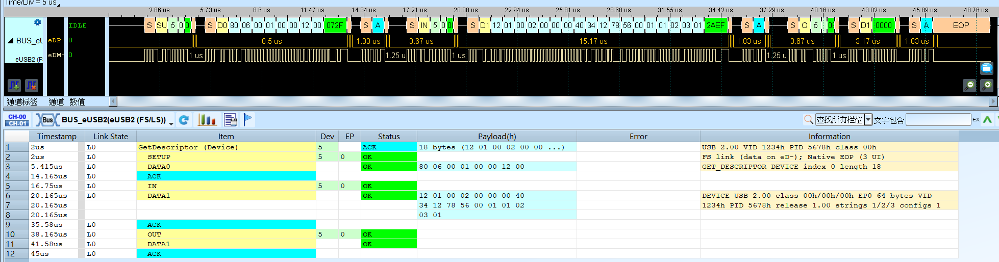
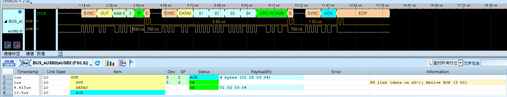
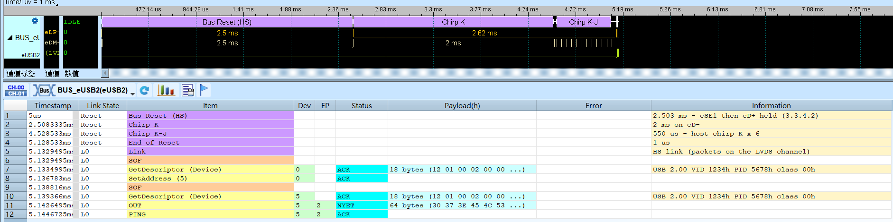

eUSB2 (Embedded USB2)
eUSB2（Embedded USB2 Physical Layer Supplement，Rev 1.2）用 eD+、eD- 两条单端信号线在芯片之间传输 USB 2.0 流量，电压为 1.0 V 或 1.2 V。全速（FS）链路为 12 Mb/s，数据在 eD- 上；低速（LS）链路为 1.5 Mb/s，数据在 eD+ 上。总线空闲时为 eSE0（两线均为低），eSE1（两线均为高）则是 eUSB2 信令的开头：Port Reset、控制消息与寄存器访问。本解码用两个逻辑分析仪通道读取 eD+ 与 eD-，解析 FS 与 LS 链路；Mode 选 HS 时，另用第三个通道经 LVDS POD 读取这对信号，解析 480 Mb/s 的 HS 链路（见 HS）。native mode（eUSB2 端口直连 eUSB2 设备）与 repeater mode（eUSB2 端口接 eUSB2-to-USB2 repeater）均可。报表列出 eUSB2 的链路信令、控制消息（CM）、寄存器访问（RAP）与 USB 2.0 数据包；数据包会组成事务（transaction）与控制传输（control transfer），标准、hub 与 class 请求都以名称显示。还可以选择同时列出 repeater 或 hub 端口在 USB 2.0 一侧的线路事件。
| 接线 | 说明 |
|---|---|
| eD+ / eD- | eUSB2 的两条线，单端测量，接到 Settings 中 eDP / eDM 指定的通道（默认 CH 0 / CH 1）。 |
| 阈值（Threshold） | eUSB2 供电电压的一半：1.0 V 系统设为 0.5 V，1.2 V 系统设为 0.6 V。接收端电平为 VIL ≤ 0.35 × VCC、VIH ≥ 0.65 × VCC（eUSB2 Table 7-12、Table 7-13）。 |
| LVDS 对 | Mode 选 HS 时才需要：接在 eD+ / eD- 上的 LVDS POD（P 接 eD+、N 接 eD-），接到 eDP/eDM (LVDS) 指定的通道（默认 CH 2）。 |
| USB2 D+ / USB2 D- | 勾选 USB 2.0 side 时才需要：repeater 或 hub 端口 USB 2.0 一侧的 D+、D-。 |
Decode Settings

| 设置 | 说明 | 默认值 |
|---|---|---|
| eDP/eDM (LVDS) | Mode 选 HS 时才显示：接在 eD+ / eD- 这对信号上的 LVDS POD 通道。 | CH 2 |
| USB 2.0 side (D+/D- line events) | 勾选后增加两个通道 USB2 D+、USB2 D-，接 eUSB2-to-USB2 repeater 或 hub 端口的 USB 2.0 一侧。这一侧的线路事件会插在 eUSB2 的行之间（见 USB 2.0 一侧）；这一侧的数据包不再重复解码，因为它们就是 eUSB2 一侧的数据包。 | 不勾选（CH 2 / CH 3） |
| Mode | FS/LS：只用 eD+、eD-。HS (LVDS POD)：增加一个 eDP/eDM (LVDS) 通道，HS 数据包从这个通道读取；链路信令与线路事件仍由 eD+、eD- 判断（见 HS）。 | FS/LS |
| Speed | Auto 根据第一个 SYNC 判断速度：SYNC 在哪条线上（FS 在 eD-、LS 在 eD+）以及一个 bit 的长度。FS (12 Mb/s)、LS (1.5 Mb/s) 为固定速度，Information 栏会注明 speed set in Settings。 |
Auto |
| Bus mode | Auto、Native 或 Repeater。三者的数据包解码方式相同。该设置决定 Port/Repeater Configuration 行的解读：先被驱动的那条线，在 native 链路上表示终端电阻开或关，在 repeater 链路上表示 host repeater 或 peripheral repeater。Native、Repeater 只给出对应的解读，Auto 两种都给出。 | Auto |
| Data | Detail Report 每行显示的字节数：8 或 16。 | 8 bytes per row |
| Detail Report | 不勾选：每个事务、控制传输、控制消息或寄存器访问一行。勾选：每行之下再缩进列出它的数据包。控制传输的数据包之间夹有其他设备的事务时，数据包仍按时间顺序列出：先是那个事务的行与数据包，接着一行 <请求名称> (continued)，下面是控制传输其余的数据包。 |
不勾选 |
| Auto-detect swapped eD+/eD- | SYNC 出现在该速度不使用的线上时（FS 的 SYNC 在 eD+、LS 的 SYNC 在 eD-），视为两线接反并反过来解码，Information 栏注明 eD+/eD- swap corrected。不勾选：用一行 Wiring 说明两线看起来接反，这些数据包不解码。 |
勾选 |
| Hide SOF rows in the report | 不显示只有 SOF 数据包（FS）或 LS keep-alive 的行。 | 不勾选 |
| Hide NAKed polls (IN/PING + NAK) | 不显示被 NAK 回应的 IN、PING token。 | 不勾选 |
| Startup hub address | 已知为 hub 的设备地址，用于枚举之后才开始采集的波形；该地址的 interrupt IN 数据会解读为 hub 的状态变化位图。 | None |
| Name RAP registers from the file | 勾选并从列表中选择一个寄存器映射文件，报表即以名称显示 RAP 访问的寄存器，并拆分出各个位域（见 RAP 寄存器映射文件）。列表列出 TL 工作目录下 AqeUSB2 文件夹中的 .def 文件；所选文件记录在本机。不勾选或选 (none)：寄存器以地址显示。 |
不勾选，(none) |
| Only device | 勾选并输入地址（0–127），报表只列出该设备。地址 0 也会列出（每个设备在 SetAddress 之前都在地址 0 枚举）。不属于任何设备的行（线路事件、控制消息、寄存器访问、SOF）照常显示。 | 不勾选，0 |
| Only endpoint | 勾选并输入端点（0–15），报表只列出该端点。0 为控制端点。 | 不勾选，0 |
| One row per bulk transfer | 同一端点上连续的满长度 bulk 事务，到结束传输的较短（或长度 0）数据包为止，合为一行。Payload 栏显示总长度，Information 栏显示事务数。勾选 Detail Report 时不合并。 | 不勾选 |
Result
报表每个项目一行：一个事务、一个控制传输、一个 eUSB2 线路事件、一个控制消息、一次寄存器访问，或一段只有 SOF 数据包与轮询的空闲行。
| 栏位 | 内容 |
|---|---|
| Link State | 该行之后的 eUSB2 链路状态：Default、Connect、Reset、L0（运行中）、L1（LPM 或 CM.L1 休眠）、L2（挂起）。波形显示出状态之前为空白。 |
| Item | 该行是什么：线路事件名称、控制消息（CM.Reset）、寄存器访问（RAP Rd 13h）；控制传输为请求名称（例如 GetDescriptor (Device)）；IN / OUT 在读到设备的 Configuration 描述符后会加上端点的传输类型（Bulk IN、Interrupt IN）；空闲行为各项的次数，例如 SOF (x8) NAK (x3) No answer (x8)。 |
| Dev | 设备地址。 |
| EP | 端点编号。 |
| Status | ACK、NAK、STALL、NYET、No handshake、Error。控制消息与寄存器访问：接收端回 ACK 或 No ACK，奇偶校验错误时为 Error。数据包行（Detail Report）为 CRC 检查结果 OK 或 Error。 |
| Payload | 数据长度与开头的字节；寄存器访问为寄存器的值。 |
| Error | 总线与协议错误以红底显示：PID 检查、CRC、bit stuffing、EOP、无响应、CM 奇偶校验、RAP turnaround 超过 64 个时钟。设备或 repeater 与规范不符时为警告，黄底，例如 Reset < 10 ms、RAP outside Default。 |
| Information | 线路事件的实测时间与 eUSB2 规范章节；解出的描述符与请求；Mass Storage 的 CBW / CSW 与 SCSI 命令、HID 启动协议键盘与鼠标报告、CDC 的 line coding；使用寄存器映射文件时的寄存器位域。 |
native eUSB2 链路从 Port Reset 开始，接着枚举一个 FS Mass Storage 设备，勾选 Hide SOF rows：Port Reset、Port Configuration、Connect、Bus Reset、End of Reset，之后是各个请求。

在 Default 状态访问 host repeater（NXP PTN3222）的寄存器，Bus mode 选 Repeater，Name RAP registers from the file 选 PTN3222.def：读一次、写一次、再读回。寄存器名称与位域来自映射文件。

host repeater 与它的 USB 2.0 一侧共四个通道，勾选 USB 2.0 side，Bus mode 选 Repeater，FS 设备已经连接：主机发出 CM.Reset，repeater 在 USB 2.0 一侧发出 12 ms 的 bus reset，之后两侧都是第一个 SOF 与第一个请求。报表列出整个采集文件；波形区只放大显示 bus reset 之后的那一段（约 12.19 至 12.28 ms，Time/Div 5 µs）：End of Reset（块上显示缩写 EoRs）、SOF 与 GetDescriptor (Device) 的开头。

勾选 Detail Report 的一个控制传输 GetDescriptor (Device)：先是传输那一行，接着是它的数据包：SETUP、DATA0、ACK，数据阶段（IN、带 18 bytes 的 DATA1、ACK），以及状态阶段（OUT、不带数据的 DATA1、ACK）。token 与数据包的行在 Status 栏显示 CRC 检查结果。波形区的块放不下完整名称时改显示缩写：SYNC 为 S、SETUP 为 SU、DATA0 / DATA1 为 D0 / D1、OUT 为 O、ACK 为 A、EOP 为 E。

勾选 Detail Report 的一个 OUT 事务：OUT token、带 4 bytes 的 DATA0，以及 ACK。波形区每个字段各占一块：SYNC、PID、地址、端点、CRC5、数据字节、CRC16 与 EOP。

eUSB2 线路事件与控制消息
| Item | 说明 |
|---|---|
| Link | 速度与承载数据的线（FS link (data on eD-)），适用时加注 eD+/eD- swap corrected 或 speed set in Settings；以及 EOP 形状显示的 bus mode：Native mode，或 repeater 的哪一侧。 |
| Wiring | Auto-detect swapped eD+/eD- 不勾选时：SYNC 出现在该速度不使用的线上，这些数据包不解码。 |
| Port Reset | XeSE1：两线同时为高，持续数 ms。链路进入 Default。 |
| Port/Repeater Config | 一条线被驱动，另一条线回应。Information：先被驱动的线及其含义（见 Bus mode）。 |
| Connect | 设备连接：FS 设备在 eD+，LS 设备在 eD-。在 repeater 的主机侧，连接信号会一直保持到主机回应，Information 加注 no answer: repeater host side。 |
| Bus Reset / End of Reset | eD+（FS）或 eD-（LS）上的 USB bus reset，以及结束它的 strobe，附上长度。 |
| Bus Reset (HS)、Chirp K、Chirp K-J | HS 链路的 bus reset（eSE1 之后 eD+ 保持为高）、设备的 chirp K，以及主机的 chirp K-J 与次数（host chirp K x 6）；之后是 End of Reset。 |
| K State、SOResume/SOWake、End of Resume | Resume 或 remote wake，以及它的结束。 |
| Disconnect | 设备断开。 |
| LS Keep-Alive | 单独一个 LS EOP。 |
| Held at Start | 从采集一开始就是高电平的线；它原本是什么无法得知。 |
| CM.FS/L1、CM.L2、CM.Reset、CM.Test、CM.RAP、CM.14 (re-driver RAP) | 控制消息（eUSB2 Table 3-4）。Information：开头较长时为 Long SCM (8X)；在时钟上升沿读到 bit 时为 Bits on rising eD+。 |
寄存器访问（RAP）
一次寄存器访问一行：RAP Rd、RAP Wr、RAP Set 或 RAP Clr 加上寄存器地址，Payload 栏为寄存器的值，Status 栏为接收端的回应。寄存器访问应在 Default 状态、Port 或 Repeater Configuration 之前进行（eUSB2 5.2.2）；波形已显示出其他状态时进行的访问为警告 RAP outside Default。turnaround 少于 3 个时钟为警告，超过 64 个时钟为错误。
RAP 寄存器映射文件
eUSB2 规定了寄存器的访问方式，没有规定有哪些寄存器：每颗 repeater 与设备的寄存器各不相同。寄存器映射文件为它们命名。勾选 Name RAP registers from the file 时：
- 第一行
RAP map说明使用的是哪个文件、命名了几个寄存器（NXP PTN3222 - 22 registers from PTN3222.def），并按行号列出文件中无法使用的每一行。文件读取失败时会说明，并注明Registers are shown by address only。 - 寄存器访问会显示寄存器名称，例如
RAP Rd (13)REVISION_ID，Information 栏把值拆分成寄存器的各个位域，例如b7:4 BASE_STEP=A b3:0 METAL_STEP=2。Set 与 Clear 会列出它改动的位。 - 每次解码都会重新读取文件，修改文件后，下一次解码即生效。
.def 文件放在 TL 工作目录下的 AqeUSB2 文件夹。文件为纯文本；# 之后为注释；数字为十六进制，写成 0x13 或 13h；位编号为十进制 0–7：
[Device]
Name = NXP PTN3222
[Register]
# <address> = <name>[, <access>] address 0x00 to 0x3F
0x13 = REVISION_ID, RO
0x05 = eUSB2_TX_CONTROL, RW
[Field]
# <register>.<msb>[:<lsb>] = <name> the register by address or by name
0x13.7:4 = BASE_STEP
0x13.3:0 = METAL_STEP
同一个寄存器读与写使用不同地址的设备，用 [Register.Read]、[Register.Write] 代替 [Register]。无法使用的行会被跳过，其他行照常有效。
No response
No response 是错误：设备没有响应 token。以下两种情况的显示方式不同：
| 情况 | 显示方式 |
|---|---|
| 设备没有对 SETUP 回 ACK（主机会重发） | 单独一行：Status 为 Error，Error 栏 No response，Information 栏 SETUP w/o ACK - the host resends it。主机重发的那个 SETUP 才是控制传输。 |
| 探头接在 hub 的下行段（波形中有发给一个未响应过的 hub 的 SPLIT 或 hub 端口请求），而且该设备到目前为止还没有响应过 | 不算错误：hub 会把主机发给其他端口的 token 转发到这一段，但看不到那些端口的响应。Status 为 No handshake，Information 栏 No response - dev n not heard from yet。它未响应的 IN / PING 轮询并入空闲行，记为 No answer (xN)，Information 栏逐一列出设备与端点。 |
hub 端口报告有设备连接、而 1 秒内没有收到 SetPortFeature(PORT_RESET) 时，报表用一行 No Port Reset 列出，并附上 hub 报告的端口状态。
USB 2.0 一侧
勾选 USB 2.0 side 时，USB 2.0 一侧的线路事件各占一行，名称以 USB2 开头：
| Item | 条件 | Information |
|---|---|---|
| USB2 Attach | SE0 之后 D+ 或 D- 被上拉并保持 2.5 µs 以上 | 被上拉的线：pull-up on D+（FS）或 pull-up on D-（LS） |
| USB2 Detach | 已连接的端口出现 SE0 并持续 200 ms | SE0 200 ms - no pull-up |
| USB2 Bus Reset | 已连接的端口出现 2.5 µs 至 200 ms 的 SE0，之后回到 J | 长度，例如 SE0 12.00 ms；短于 10 ms 时另有警告 Reset < 10 ms |
| USB2 Suspend | 已连接的端口上 J 保持 3 ms 没有变化 | J idle 3 ms - dev suspends |
| USB2 Resume K | K 保持 1 ms 以上 | 长度，Resume / Remote Wake |
| USB2 SE1 | D+、D- 同时为高并保持 1 µs 以上 | D+ and D- both high |
此时 No Port Reset 行会再加注 USB 2.0 一侧在这段时间内的情况：USB2 side: no bus reset 或 USB2 side: a bus reset。事件发生时若还有尚未结束的 eUSB2 行，USB 2.0 的行会排在那一行之后，时间为那一行的结束时间。
HS
| 项目 | 内容 |
|---|---|
| 仪器 | LA4000 或 BusFinder，搭配 LVDS POD。 |
| 通道 | eD+、eD- 两路单端，加上接在这对信号上的 LVDS POD：P 接 eD+、N 接 eD-。链路信令与线路事件（含 HS 的 bus reset 与 chirp）由 eD+、eD- 判断；HS 数据包从 LVDS 通道读取。 |
| 采样率 | 2 GS/s。每个 HS 位少于 3 个采样点（1.44 GS/s）时，报表第一行为 HS mode，Information 栏 <n> samples per HS UI - need >= 3；仍会解码。 |
| Link | 第一个 HS 行：Link，Information 栏 HS link (packets on the LVDS channel)。 |
| Live mode | HS 数据包不在 live mode 解码：报表第一行为 HS mode，Information 栏 HS packets are not decoded live，只解码 eD+、eD-。 |
HS 链路的 Bus Reset 与 chirp 握手，接着以 HS 进行 GetDescriptor (Device)、SetAddress (5)、GetDescriptor (Device)、一个回 NYET 的 bulk OUT 与其后的 PING；Mode 为 HS。波形区显示 eD+、eD- 上的复位：Bus Reset (HS)、Chirp K 与 Chirp K-J。
